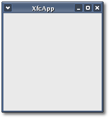

| Xfce
Foundation Classes |
|||
|
|||
Chapter 1: Basic XFC ApplicationEvery application starts out as an
empty main window consisting of
nothing more
than a frame, a title bar and a client area. In XFC, the most
basic application can be written in just 35 lines of code. I
have called this application 'XfcApp' but you can call it anything
you
like.
The header file for XfcApp is <xfcapp.hh>: #include <xfc/main.hh> and the source file is <xfcapp.cc>: #include "xfcapp.hh"Compiling XfcAppIf you compiled and installed XFC yourself, you will find the source code for XfcApp in the <examples/tutorial/chapter01> source directory along with a Makefile. If XFC came pre-installed, or you installed it from an RPM package, you will find the source code in the </usr/share/doc/xfcui-X.X/examples/tutorial/chapter01> subdirectory. In this case you will have to create the Makefile yourself (replace X.X with the version number of the libXFCui library you have installed).To create a Makefile for XfcApp, add the following lines to a new text file and save it using the name "Makefile": CC = g++CFLAGS) `pkg-config
xfcui-X.X
--cflags --libs`If you cut and paste these lines make sure the whitespace before $(CC) and rm is a tab character. When you compile and run this program you will see the following window appear: 
If you look will notice that the size of the binary file is 26.3 kbytes. This is much larger than the comparable C program which is only 5.6 kbytes. Don't let this worry you. You have to remember that in C++ you get all the object-oriented features (encapsulation, inheritance and polymorphism) built-in. In C, you have to add everything yourself. Eventually though, any real functional C program gets large enough that the difference between it and a comparable C++ program is in the order of 5%. In todays world of fast CPUs and large hard disks this difference is insignificant but the benefits can be great! Convenience, easy code reuse, polymorphic classes, increased type safety, better program design and multiple programming paradigms (generic, object orientated, procedural); I could go on. Stepping through the source codeLooking at the header file first, <xfcapp.hh> includes 2 other header files:#include <xfc/main.hh> The first include <xfc/main.hh> is the main application header file. It contains all the library initialization functions declared in the Main:: namespace. Every application must include this header file. The next include <xfc/gtk/window.hh> is the Gtk::Window header file. Application main windows usually derive from Gtk::Window but they may derive from Gtk::Dialog. If you include <xfc/gtk/dialog.hh> you don't need to include <xfc/gtk/window.hh> as well because Gtk::Dialog derives from Gtk::Window and automatically includes its header file. The next line opens the Xfc:: namespace so you don't have to prefix every type name with Xfc:: using namespace Xfc;Don't be afraid to use namespaces in your application development. They're the best way to partition a large program and to avoid the over use of type name prefixes to prevent name clashes. The next few lines of code declare the XfcApp class: class XfcApp : public Gtk::WindowAs you can see XfcApp derives Gtk::Window. It has a constructor that takes no arguments and it has a virtual destructor. The XFC object hierarchy is polymorphic because its classes contain virtual functions, so derived classes must have a virtual destructor. The primary base class Xfc::Trackable declares its destructor virtual, so all classes derived from it, including XfcApp, automatically have a virtual destructor. A virtual destructor just ensures that all derived classes deleted through a base class pointer are properly destructed. Looking at the source file, <xfcapp.cc> first includes the XfcApp header file. Then the XfcApp constructor is defined: XfcApp::XfcApp()The XfcApp constructor calls one function: set_title(), which sets the name of the window in title bar to "XfcApp". The set_title() function is declared in Gtk::Window. The XfcApp destructor doesn't do anything so it is left empty. The last function, main(), is the entry point for the application and is declared the same in both C and C++. An XFC application's main() function is where an instance of the main application window is created. As previously stated, the namespace declaration opens the 'Main::' namespace so that type names don't need to be prefixed with Main:: using namespace Main;The init() function must be called before using any other XFC methods in your application. init() initializes everything needed to operate the library and parses some standard command line options. argc and argv are adjusted accordingly so your own code will never see those standard arguments. init(&argc, &argv);In the next two lines an instance of XfcApp is created on the stack and its destroy signal is connected to the application's quit() method: XfcApp window;XfcApp could have been created with operator new but if it was you would not call operator delete. XFC memory management uses reference counting which requires you to call ref() to hold onto a reference to an object and to call unref() to release it. When an object's reference count reaches zero XFC automatically calls operator delete. Having said that, if you create XfcApp with operator new you must only call unref() if you first call ref(). This is because Gtk::Window is an exception. GTK+ owns all top level windows and creates them with a reference count of one which GTK+ owns. So for a Gtk::Window if you don't call ref() you don't need to call unref(). Instead the correct way to destroy a top level window is to call its dispose() method, which is declared in Gtk::Object. Getting back to our application, if you create XfcApp with operator new you don't need to call unref() or dispose(). The window's 'destroy' signal is connected to the application's quit() method so that when the main window is closed or destroyed, quit() automatically gets called. The proxy object returned by the call to signal_destroy() is used to make this connection. signal_destroy() is known as a proxy signal function and is declared in Gtk::Object. sigc::ptr_fun() is a libsigc++ function call that takes a pointer to a global function and returns a function slot. Slots are type-safe C++ representations of callback methods and functions. The next line in the main() function calls show() to display XfcApp's main window on screen, so that it is visible. The show() function is declared in Gtk::Widget along with a complimentary hide() function that makes a widget invisible. window.show();The next line calls run() which runs the application's main event loop. The main loop will run until quit() is called. You can nest calls to run(). In that case quit() will make the innermost invocation of the main loop return. run();The last line is the main() function's return statement. The return value doesn't do anything so zero is returned. return 0;Well that was easy. The next chapter takes you through building another simple XFC application: Hello World, which adds a button widget to a main window and connects it to a signal handler. In chapter 4 we will come back to XfcApp again when we start building it into a functional main window and fully compliant GNU autotools project.
|